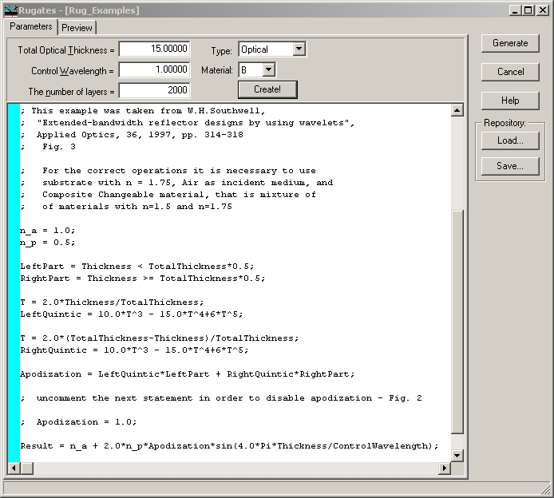
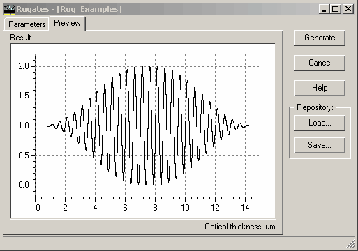
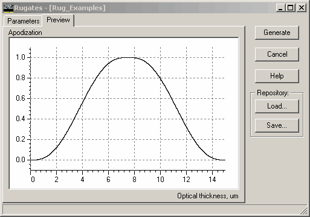
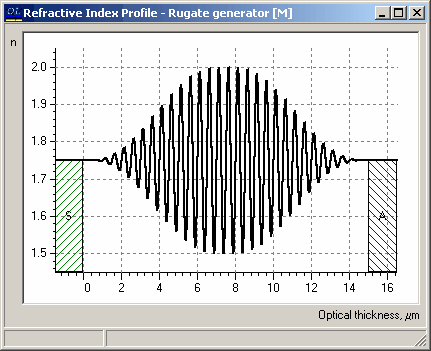
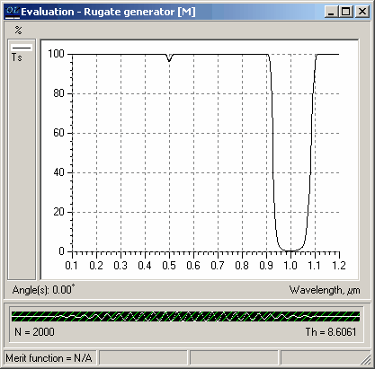

Rugates
Rugates
Navigation: OptiLayer Menu Commands > Analysis Menu >
Rugates
` <export_target_setup.html>`__ ` <idh_menu_analysis.html>`__ ` <creatematerialassistant.html>`__
The Rugates option allows for the analysis of so-called rugate coatings. Rugate coatings are described by an analytical expression that gives the dependence of the refractive index on the coating thickness. In OptiLayer, the dependence of the refractive index is described with the help of a fraction function based on Changeable Composite material.
Changeable Composite material is a mixture of two materials, which we will call High Index and Low Index material. If the Change option of such material is “Per Layer,” it can be used for the rugate filter description. Therefore, it is necessary to create and load at least one Layer material that is a Changeable Composite into memory. For easy creation, you can use the “Create!” button in the Rugates dialog, which will invoke the Create Material Assistant for you.

One of the examples is shown in this figure. It is a rugate filter with quintic apodization. In the expression determining the dependence of the fraction on coordinate, it is possible to use the following predefined variables:
N - Number of Layers
L - Current Layer Number
TotalThickness - Total Physical or Optical Thickness (μm)
LayerThickness - Physical or Optical Thickness of one layer (μm)
Thickness - Cumulative Physical or Optical Thickness to the center of the current layer (μm)
Control Wavelength - Control Wavelength (μm)
Result - Output characteristic describing the rugate filter, that is, the fraction or packing density of High Material
The Total Thickness, Control Wavelength, and Number of Layers entry fields determine the corresponding predefined variable values.
Short description of expression syntax
The syntax of the expression is quite simple. Generally, it consists of a sequence of expressions that should be placed on separate lines and terminated with a semicolon. Any text after a semicolon is ignored and can be used as a comment. New variables can be defined by expressions of the type:
NewVar = something;
After definition, the value of the new expression can be used on the right-hand side of expressions. The precedence of operations from highest to lowest is as follows:
^ (power)
* (multiplication),
/ (division),
div (integer division),
% (remainder)
+ (addition),
- (subtraction)
>, >=, <, <=,
!= (not equal),
== (equal)
! (not)
|| (or),
&& (and), ~ (xor)
= (assign)
The result of logical operations is false (value 0) or true (value 1).
The following elementary functions are predefined and can be used in expressions:
exp(x) - exponent,
sqr(x) - square of x, the same as x^2,
sqrt(x) - the square root of a number,
abs(x) - absolute value,
round(x) - round to a nearest integer,
trunc(x) - truncates a real number to an integer’,
ln(x) - natural logarithm of x,
log10(x) - logarithm base 10 of x,
logN(x, y) - logarithm base x of y,
power(x, y) - power, the same as x^y,
max(x, y) - the maximum of both arguments,
min(x, y) - the minimum of both arguments,
sin(x) - sine of an angle in rad,
cos(x) - cosine of an angle in rad,
tan(x) - tangent of an angle in rad,
arcsin(x) - inverse sine in rad,
arccos(x) - inverse cosine in rad,
arctan2(x, y) - inverse tangent (x/y) in rad,
arctan(x) - inverse tangent in rad,
sinh(x) - hyperbolic sine of an angle in rad,
cosh(x) - hyperbolic cosine of an angle in rad,
tanh(x) - hyperbolic tangent of an angle in rad,
arcsinh(x) - inverse hyperbolic sine in rad,
arccosh(x) - inverse hyperbolic cosine in rad,
arctanh(x) - inverse hyperbolic tangent in rad,
degtorad(x) - conversion of degrees to radians,
radtodeg(x) - conversion of radians to degrees,
random - generates uniformily distributed rundom numbers in the semi-interval [0, 1).
randg(Mean, StdDev) - produces random numbers with Gaussian distribution about the Mean.
The fraction profile can be observed on the Preview page of the Rugates dialog.

Note that the y-axis is marked as “Result” now. When entering complicated expressions, it is very useful to view intermediate values of expressions. For this purpose, select any left-hand side expressions and switch to the Preview tab again. For example, after selecting the Apodization variable in the expression editor, the Preview page will look as follows.

Note that the y-axis is now designated as “Apodization.” The repository can be used to store Rugate filters definitions. Several additional examples found in the repository demonstrate different techniques and can help you start working with the Rugates option. Press the Generate button to create a rugate-like coating and to export it to the OptiLayer environment. Below, you can see the refractive index profile corresponding to the considered example and its spectral performance.

We recommend using HiRes Plots mode when working with Rugate coatings, because high total optical thicknesses require dense wavelength grids for proper display of fine features.
